전기산업기사 (2017-03-05 기출문제)
1과목: 전기자기학
1. 자화의 세기 Jm[C/m2]을 자속밀도 B[WB/m2]와 비투자율 μT로 나타내면?
- Jm=(1-μT)B
- Jm=(μT-1)B
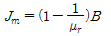
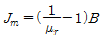
(정답률: 73%)

2. 평행판 콘덴서의 양극판 면적을 3배로 하고 간격을 1/3로 줄이면 정전용량은 처음의 몇 배가 되는가?
- 1
- 3
- 6
- 9
(정답률: 80%)
3. 임의의 절연체에 대한 유전율의 단위로 옳은 것은?
- F/m
- V/m
- N/m
- C/m2
(정답률: 73%)
4. 비유전율이 4이고, 전계의 세기가 20 kV/m인 유전체 내의 전속밀도는 약 몇 μC/m2인가?
- 0.71
- 1.42
- 2.83
- 5.28
(정답률: 61%)
5. 저항 24Ω의 코일을 지나는 자속이0.6cos800t[Wb]일 때 코일에 흐르는 전류의 최대값은 몇 A인가?(오류 신고가 접수된 문제입니다. 반드시 정답과 해설을 확인하시기 바랍니다.)
- 10
- 20
- 30
- 40
(정답률: 59%)
6. -1.2 C의 점전하가 5ax+2ay-3az[m/s]인 속도로 운동한다. 이 전하가 B=-4ax+4ay+3az[Wb/m2]인 자계에서 운동하고 있을 때 이 전하에 작용하는 힘은 약 몇 N 인가? (단, ax, ay, az는 단위벡터이다.)
- 10
- 20
- 30
- 40
(정답률: 45%)
7. 유도기전력의 크기는 폐회로에 쇄교하는 자속의 시간적 변화율에 비례한다는 법칙은?
- 쿨롱의 법칙
- 패러데이 법칙
- 플레밍의 오른손 법칙
- 암페어의 주회적분 법칙
(정답률: 78%)
8. 평행판 공기콘덴서 극판 간에 비유전율 6인 유리판을 일부만 삽입한 경우, 유리판과 공기간의 경계면에서 발생하는 힘은 약 몇 N/m2인가? (단, 극판간의 전위경도는 30kV/㎝이고 유리판의 두께는 평행판 간 거리와 같다.)
- 199
- 223
- 247
- 269
(정답률: 46%)
9. 극판면적 10cm2, 간격1㎜인 평행판 콘덴서에 비유전율이 3인 유전체를 채웠을 때 전압 100V를 가하면 축적되는 에너지는 약 몇 J인가?
- 1.32×10-7
- 1.32×10-9
- 2.64×10-7
- 2.64×10-9
(정답률: 63%)
10. 0.2Wb/m2의 평등자계 속에 자계와 직각방향으로 놓인 길이 30cm의 도선을 자계와 30°의 방향으로 30m/s의 속도로 이동시킬 때 도체 양단에 유기되는 기전력은 몇 V인가?
- 0.45
- 0.9
- 1.8
- 90
(정답률: 73%)
11. 전기 쌍극자에서 전계의 세기(E)와 거리(r)과의 관계는?
- E는 r2에 반비례
- E는 r3에 반비례
- E는
 에 반비례
에 반비례 - E는
 에 반비례
에 반비례
(정답률: 81%)
12. 대전도체 표면의 전하밀도를 σ[C/m2]이라 할 때, 대전도체 표면의 단위면적이 받는 정전응력은 전하밀도 σ와 어떤 관계에 있는가?
 에 비례
에 비례 에 비례
에 비례- σ에 비례
- σ2에 비례
(정답률: 63%)
13. 단면적이 같은 자기회로가 있다. 철심의 투자율을 μ라 하고 철심회로의 길이를 ㅣ이라 한다. 지금 그 일부에 미소공극 ㅣ0을 만들었을 때 자기회로의 자기저항은 공극이 없을 때의 약 몇 배인가? (단,ㅣ≫ㅣ0이다.)
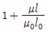
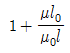
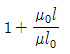
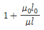
(정답률: 65%)
14. 그림과 같이 도체구 내부 공동의 중심에 점전하 Q[C]가 있을 때 이 도체구의 외부로 발산되어 나오는 전기력선의 수는? (단, 도체내외의 공간은 진공이라 한다.)
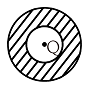
- 4π
- Q/ℇ0
- Q
- ℇ0Q
(정답률: 69%)
15. E=xi-yj[V/m]일 때 점 (3, 4)m를 통과하는 전기력선의 방정식은?
- y=12x
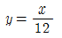
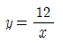
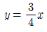
(정답률: 66%)
16. 전자파 파동임피던스 관계식으로 옳은 것은?
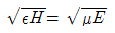
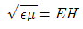
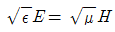
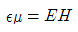
(정답률: 70%)
17. 1000AT/m의 자계 중에 어떤 자극을 놓았을 때 3×102[N]의 힘을 받았다고 한다. 자극의 세기[Wb]는?
- 0.03
- 0.3
- 3
- 30
(정답률: 75%)
18. 자위(magnetic potential)의 단위로 옳은 것은?
- C/m
- N ㆍ m
- AT
- J
(정답률: 77%)
19. 매초마다 S면을 통과하는 전자에너지를
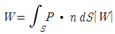
로 표시하는데 이 중 틀린 설명은?- 벡터 P를 포인팅 벡터라 한다.
- n이 내향일 때는 S 면내에 공급되는 총 전력이다.
- n이 외향일 때에는 S 면에서 나오는 총 전력이 된다.
- P의 방향은 전자계의 에너지 흐름의 진행방향과 다르다.
(정답률: 70%)
20. 자기인덕턴스 L[H]의 코일에 I[A]의 전류가 흐를 때 저장되는 자기에너지는 몇 [J]인가?
- LI
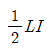
- LI2
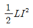
(정답률: 80%)
2과목: 전력공학
21. 19/1.8mm 경동연선의 바깥지름은 몇 mm인가?
- 5
- 7
- 9
- 11
(정답률: 61%)
22. 일반적으로 전선 1가닥의 단위 길이당 작용 정전용량이 다음과 같이 표시되는 경우 D가 의미하는 것은?
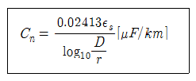
- 선간거리
- 전선 지름
- 전선 반지름
- 선간거리 ×1/2
(정답률: 80%)
23. 3상 3선식 1선 1km의 임피던스가 Z[Ω]이고, 어드미턴스가 Y[℧]일 때 특성 임피던스는?
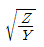
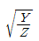
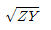
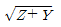
(정답률: 72%)
24. 역률 개선을 통해 얻을 수 있는 효과와 거리가 먼 것은?
- 고조파 제거
- 전력 손실의 경감
- 전압 강하의 경감
- 설비 용량의 여유분 증가
(정답률: 62%)
25. 송전단 전압이 154kV, 수전단 전압이 150kV인 송전선로에서 부하를 차단하였을 때 수전단 전압이 152kV가 되었다면 전압 변동률은 약 몇 %인가?
- 1.11
- 1.33
- 1.63
- 2.25
(정답률: 74%)
26. 다음 중 VCB의 소호원리로 맞는 것은?
- 압축된 공기를 아크에 불어 넣어서 차단
- 절연유 분해가스의 흡부력을 이용해서 차단
- 고진공에서 전자의 고속도 확산에 의해 차단
- 고성능 절연특성을 가진 가스를 이용하여 차단
(정답률: 66%)
27. 선간 단락 고장을 대칭좌표법으로 해석할 경우 필요한 것 모두를 나열한 것은?
- 정상 임피던스
- 역상 임피던스
- 정상 임피던스, 역상 임피던스
- 정상 임피던스, 영상 임피던스
(정답률: 71%)
28. 피뢰기의 제한전압에 대한 설명으로 옳은 것은?
- 방전을 개시할 때의 단자전압의 순시값
- 피뢰기 동작 중 단자전압의 파고값
- 특성요소에 흐르는 전압의 순시값
- 피뢰기에 걸린 회로전압
(정답률: 72%)
29. 전력계통에서 안정도의 종류에 속하지 않는 것은?
- 상태 안정도
- 정태 안정도
- 과도 안정도
- 동태 안정도
(정답률: 66%)
30. 3300V, 60Hz, 뒤진 역률 60%, 300kW의 단상 부하가 있다. 그 역률을 100%로 하기 위한 전력용 콘덴서의 용량은 몇 kVA인가?
- 150
- 250
- 400
- 500
(정답률: 58%)
31. 저수지에서 취수구에 제수문을 설치하는 목적은?
- 낙차를 높인다.
- 어족을 보호한다.
- 수차를 조절한다.
- 유량을 조절한다.
(정답률: 75%)
32. 거리 계전기의 종류가 아닌 것은?
- 모우(Mho) 형
- 임피던스 형
- 리액턴스 형
- 정전용량 형
(정답률: 55%)
33. 전력용 퓨즈의 설명으로 옳지 않은 것은?
- 소형으로 큰 차단용량을 갖는다.
- 가격이 싸고 유지 보수가 간단하다.
- 밀폐형 퓨즈는 차단시에 소음이 없다.
- 과도 전류에 의해 쉽게 용단되지 않는다.
(정답률: 66%)
34. 갈수량이란 어떤 유량을 말하는가?
- 1년 365일 중 95일간은 이보다 낮아지지 않는 유량
- 1년 365일 중 185일간은 이보다 낮아지지 않는 유량
- 1년 365일 중 275일간은 이보다 낮아지지 않는 유량
- 1년 365일 중 355일간은 이보다 낮아지지 않는 유량
(정답률: 70%)
35. 가공 선로에서 이도를 D[m]라 하면 전선의 실제 길이는 경간 SS[m]보다 얼마나 차이가 나는가?
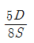
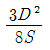
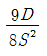
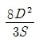
(정답률: 69%)
36. 유도뢰에 대한 차폐에서 가공지선이 있을 경우 전선상에 유기되는 전하를 q1, 가공지선이 없을 때 유기되는 전하를 q0라 할 때 가공지선의 보호율을 구하면?
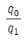
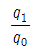
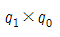
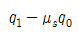
(정답률: 61%)
37. 어떤 건물에서 총 설비 부하용량이 700kW, 수용률이 70%라면, 변압기 용량은 최소 몇 kVA로 하여야 하는가? (단, 여기서 설비 부하의 종합 역률은 0.8이다.)
- 425.9
- 513.8
- 612.5
- 739.2
(정답률: 69%)
38. 동작전류가 커질수록 동작시간이 짧게 되는 특성을 가진 계전기는?
- 반한시 계전기
- 정한시 계전기
- 순한시 계전기
- 부한시 계전기
(정답률: 76%)
39. 전력 원선도의 가로축 ①과 세로축 ②이 나타내는 것은?
- ① 최대전력, ② 피상전력
- ① 유효전력, ② 무효전력
- ① 조상용량, ② 송전손실
- ① 송전효율, ② 코로나 손실
(정답률: 81%)
40. 직접접지 방식에 대한 설명이 아닌 것은?
- 과도 안정도가 좋다.
- 변압기의 단절연이 가능하다.
- 보호 계전기의 동작이 용이하다.
- 계통의 절연 수준이 낮아지므로 경제적이다.
(정답률: 51%)
3과목: 전기기기
41. 450kVA, 역률 0.85, 효율 0.9인 동기 발전기의 운전용 원동기의 입력은 500kW이다. 이 원동기의 효율은?
- 0.75
- 0.80
- 0.85
- 0.90
(정답률: 52%)
42. 다음 중 일반적인 동기 전동기 난조 방지에 가장 유효한 방법은?
- 자극수를 적게 한다.
- 회전자의 관성을 크게 한다.
- 자극면에 제동권선을 설치한다.
- 동기 리액턴스 xx를 작게 하고 동기 화력을 크게 한다.
(정답률: 76%)
43. 일반적인 농형 유도 전동기에 관한 설명 중 틀린 것은?
- 2차측을 개방할 수 없다.
- 2차측의 전압을 측정할 수 있다.
- 2차저항 제어법으로 속도를 제어할 수 없다.
- 1차 3선 중 2선을 바꾸면 회전방향을 바꿀 수 있다.
(정답률: 45%)
44. sE2는 권선형 유도전동기의 2차 유기전압이고 Ec는 외부에서 2차 회로에 가하는 2차 주파수와 같은 주파수의 전압이다. Ec가 sE2와 반대 위상일 경우 Ec를 크게 하면 속도는 어떻게 되는가? (단, sE2-Ec는 일정하다.)
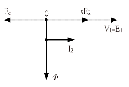
- 속도가 증가한다.
- 속도가 감소한다.
- 속도에 관계없다.
- 난조 현상이 발생한다.
(정답률: 59%)
45. 3상 유도전동기의 전원 주파수와 전압의 비가 일정하고 정격속도 이하로 속도를 제어하는 경우 전동기의 출력 P와 주파수 f와의 관계는?
- P∝f
- P∝1/f
- P∝f2
- P는 f에 무관
(정답률: 68%)
46. 변압기의 철심이 갖추어야 할 조건으로 틀린 것은?
- 투자율이 클 것
- 전기 저항이 작을 것
- 성층 철심으로 할 것
- 히스테리시스손 계수가 작을 것
(정답률: 60%)
47. 3상 유도전동기가 경부하로 운전 중 1선의 퓨즈가 끊어지면 어떻게 되는가?
- 전류가 증가하고 회전은 계속한다.
- 슬립은 감소하고 회전수는 증가한다.
- 슬립은 증가하고 회전수는 증가한다.
- 계속 운전하여도 열손실이 발생하지 않는다.
(정답률: 53%)
48. 단상 반파정류회로에서 평균 출력 전압은 전원 전압의 약 몇 %인가?(오류 신고가 접수된 문제입니다. 반드시 정답과 해설을 확인하시기 바랍니다.)
- 45.0
- 66.7
- 81.0
- 86.7
(정답률: 56%)
49. 그림과 같이 전기자 권선에 전류를 보낼 때 회전방향을 알기 위한 법칙 및 회전 방향은?
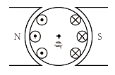
- 플레밍의 왼손 법칙, 시계 방향
- 플레밍의 오른손 법칙, 시계 방향
- 플레밍의 왼손 법칙, 반시계 방향
- 플레밍의 오른손 법칙, 반시계 방향
(정답률: 61%)
50. 1차측 권수가 1500인 변압기의 2차측에 접속한 저항 16Ω을 1차측으로 환산했을 때 8kΩ으로 되어 있다면 2차측 권수는 약 얼마인가?
- 75
- 70
- 67
- 64
(정답률: 53%)
51. 출력과 속도가 일정하게 유지되는 동기 전동기에서 여자를 증가시키면 어떻게 되는가?
- 토크가 증가한다.
- 난조가 발생하기 쉽다.
- 유기기전력이 감소한다.
- 전기자 전류의 위상이 앞선다.
(정답률: 47%)
52. 다음 전자석의 그림 중에서 전류의 방향이 회살표와 같을 때 위쪽 부분이 N극인 것은?
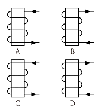
- A, B
- B, C
- A, D
- B, D
(정답률: 71%)
53. 동기 발전기의 전기자 권선법 중 집중권에 비해 분포권이 갖는 장점은?
- 난조를 방지할 수 있다.
- 기전력의 파형이 좋아진다.
- 권선의 리액턴스가 커진다.
- 합성 유도 기전력이 높아진다.
(정답률: 73%)
54. 와류손이 50W인 3300/110V, 60Hz용 단상 변압기를 50Hz, 3000V의 전원에 사용하면 이 변압기의 와류손은 약 몇 W로 되는가?
- 25
- 31
- 36
- 41
(정답률: 44%)
55. 2대의 동기 발전기를 병렬 운전 할 때, 무효횡류(무효 순환전류)가 흐르는 경우는?
- 부하 분담의 차가 있을 때
- 기전력의 위상차가 있을 때
- 기전력의 파형에 차가 있을 때
- 기전력의 크기에 차가 있을 때
(정답률: 55%)
56. 포화하고 있지 않은 직류 발전기의 회전수가 1/2로 감소되었을 때 기전력을 속도 변화 전과 같은 값으로 하려면 여자를 어떻게 해야 하는가?
- 1/2배로 감소시킨다.
- 1배로 증가시킨다.
- 2배로 증가시킨다.
- 4배로 증가시킨다.
(정답률: 69%)
57. 교류 전동기에서 브러시 이동으로 속도 변화가 용이한 전동기는?
- 동기 전동기
- 시라게 전동기
- 3상 농형 유도 전동기
- 2중 농형 유도 전동기
(정답률: 68%)
58. 단상 유도 전압 조정기의 1차 전압 100V, 2차 전압 100±30V, 2차 전류는 50A이다. 이 전압 조정기의 정격용량은 약 몇 kVA인가?
- 1.5
- 2.6
- 5
- 6.5
(정답률: 37%)
59. 변압기의 병렬운전 조건에 해당하지 않는 것은?
- 각 변압기의 극성이 같을 것
- 각 변압기의 정격 출력이 같을 것
- 각 변압기의 백분율 임피던스 강하가 같을 것
- 각 변압기의 권수비가 같고 1차 및 2차의 정격전압이 같을 것
(정답률: 50%)
60. 4극 단중 파권 직류 발전기의 전전류가 I[A]일 때, 전기자 권선의 각 병렬회로에 흐르는 전류는 몇 A가 되는가?
- 4I
- 2I
- I/2
- I/4
(정답률: 57%)
4과목: 회로이론
61. 정현파 교류전압의 파고율은?
- 0.91
- 1.11
- 1.41
- 1.73
(정답률: 71%)
62. 인덕턴스L=20mH인 코일에 실효값 V=50V 주파수 f=60Hz인 정현파 전압을 인가했을 때 코일에 축적되는 평균 자기 에너지 WL은 약 몇 [J]인가?
- 0.22
- 0.33
- 0.44
- 0.55
(정답률: 51%)
63. 테브난의 정리를 이용하여 (a)회로를 (b)와 같은 등가 회로로 바꾸려 한다. V[V]와 R[Ω]의 값은?
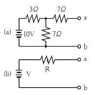
- 7V, 9.1Ω
- 10V, 9.1Ω
- 7V, 6.5Ω
- 10V, 6.5Ω
(정답률: 66%)
64. 그림과 같은 회로에서 r1 저항에 흐르는 전류를 최소로 하기 위한 저항 r2[Ω]는?
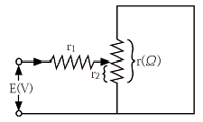
- r1/2
- r/2
- r1
- r
(정답률: 70%)
65. 그림과 같이 π형 회로에서 Z3를 4단자 정수로 표시한 것은?
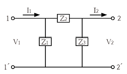
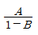
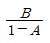
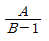
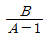
(정답률: 47%)
66. 다음의 4단자 회로에서 단자 a-b에서 본 구동점 임피던스 Z11은?
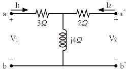
- 2+j4
- 2-j4
- 3+j4
- 3-j4
(정답률: 63%)
67. 불평형 3상 전류가 다음과 같을 때 역상 전류 I2는 약 몇 A인가?
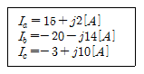
- 1.91+j6.24
- 2.17+j5.34
- 3.38-j4.26
- 4.27-j3.68
(정답률: 46%)
68. 다음과 같은 회로에서 E1, E2, E3[V]를 대칭 3상 전압이라 할 때 전압 E0[V]은?
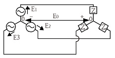
- 0
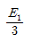
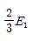
- E1
(정답률: 71%)
69. 100kVA 단상 변압기 3대로 △결선하여 3상 전원을 공급하던 중 1대의 고장으로 V결선하였다면 출력은 약 몇 kVA인가?
- 100
- 173
- 245
- 300
(정답률: 78%)
70. 저항 R[Ω]과 리액턴스 X[Ω]이 직렬로 연결된 회로에서
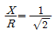
일 때, 이 회로의 역률은?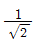
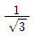
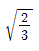
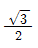
(정답률: 52%)
71. 옴의 법칙은 저항에 흐르는 전류와 전압의 관계를 나타낸 것이다. 회로의 저항이 일정할 때 전류는?
- 전압에 비례한다.
- 전압에 반비례한다.
- 전압의 제곱에 비례한다.
- 전압의 제곱에 반비례한다.
(정답률: 67%)
72. 어떤 회로의 단자 전압과 전류가 다음과 같을 때, 회로에 공급되는 평균 전력은 약 몇 W인가?
- 565
- 525
- 495
- 465
(정답률: 48%)
73. 그림과 같은 회로가 있다. I=10A, G=4℧, GL=6℧일 때, GL의 소비전력[W]은?
- 100
- 10
- 6
- 4
(정답률: 48%)
74. 의 역라플라스 변환은?
(정답률: 39%)
75. 그림과 같은 회로에서 t=0에서 스위치를 닫으면 전류 i(t)[A]는? (단, 콘덴서의 초기전압은 0[V]이다.)
- 5(1-e-t)
- 1-e-t
- 5e-t
- e-t
(정답률: 41%)
76. 그림과 같은 회로에서 스위치 S를 t=0에서 닫았을 때 이다. L[H]의 값은?
- 0.75
- 0.5
- 0.25
- 0.1
(정답률: 69%)
77. 임피던스 함수 으로 주어지는 2단자 회로망에 100V의 직류 전압을 가했다면 회로의 전류는 몇 A인가?
- 4
- 6
- 8
- 10
(정답률: 60%)
78. 단위 임펄스 δ(t)의 라플라스 변환은?
- e-s
- 1/s
- 1/s2
- 1
(정답률: 56%)
79. 전류 I=30sinwt+40sin(3wt+45°)[A]의 실효값은 약 몇 A인가?
- 25
- 35.4
- 50
- 70.7
(정답률: 52%)
80. 은?
(정답률: 36%)
5과목: 전기설비기술기준 및 판단 기준
81. 고압 가공전선로의 가공지선으로 나경동선을 사용할 경우 지름 몇 mm 이상으로 시설하여야 하는가?(오류 신고가 접수된 문제입니다. 반드시 정답과 해설을 확인하시기 바랍니다.)
- 2.5
- 3
- 3.5
- 4
(정답률: 57%)
82. 저압 옥내배선을 금속 덕트 공사로 할 경우 금속 덕트에 넣는 전선의 단면적(절연 피복의 단면적 포함)의 합계는 덕트 내부 단면적의 몇 %까지 할 수 있는가?
- 20
- 30
- 40
- 50
(정답률: 60%)
83. 타냉식 특고압용 변압기의 냉각장치에 고장이 생긴 경우 시설해야 하는 보호장치는?
- 경보 장치
- 온도 측정 장치
- 자동 차단 장치
- 과전류 측정 장치
(정답률: 68%)
84. 다음 (①), (②)에 들어갈 내용으로 옳은 것은?
- ① 정전용량 ② 표피작용
- ① 정전용량 ② 유도작용
- ① 누설전류 ② 표피작용
- ① 누설전류 ② 유도작용
(정답률: 60%)
85. B종 철주 또는 B종 철근 콘크리트주를 사용하는 특고압 가공전선로의 경간은 몇 m 이하이어야 하는가?
- 150
- 250
- 400
- 600
(정답률: 60%)
86. 전력보안 통신선 시설에서 가공전선로의 지지물에 시설하는 가공 통신선에 직접 접속하는 통신선의 종류로 틀린 것은?
- 조가용선
- 절연전선
- 광섬유 케이블
- 일반 통신용 케이블 이외의 케이블
(정답률: 57%)
87. 변전소의 주요 변압기에서 계측하여야 하는 사항 중 계측 장치가 꼭 필요하지 않는 것은? (단, 전기 철도용 변전소의 주요 변압기는 제외한다.)
- 전압
- 전류
- 전력
- 주파수
(정답률: 64%)
88. 옥내의 네온 방전등 공사의 방법으로 옳은 것은?
- 전선 상호간의 간격은 5cm 이상일 것
- 관등회로의 배선은 애자사용 공사에 의할 것
- 전선의 지지점간의 거리는 2m 이하로 할 것
- 관등회로의 배선은 점검할 수 없는 은폐된 장소에 시설할 것
(정답률: 43%)
89. 무대, 무대마루 밑, 오케스트라박스, 영사실 기타 사람이나 무대 도구가 접촉할 우려가 있는 곳에 시설하는 저압 옥내배선, 전구선 또는 이동전선은 사용 전압이 몇 V 미만이어야 하는가?
- 100
- 200
- 300
- 400
(정답률: 58%)
90. 저압 가공전선로와 기설 가공약전류 전선로가 병행하는 경우에는 유도작용에 의하여 통신상의 장해가 생기지 아니하도록 전선과 기설 약전류 전선 간의 이격거리는 몇 m 이상이어야 하는가?
- 1
- 2
- 2.5
- 4.5
(정답률: 42%)
91. 금속관 공사에 의한 저압 옥내배선의 방법으로 틀린 것은?
- 전선으로 연선을 사용하였다.
- 옥외용 비닐절연전선을 사용하였다.
- 콘크리트에 매설하는 관은 두께 1.2mm 이상을 사용하였다.
- 사용전압 400V 이상이고 사람의 접촉 우려가 없어 제 3종 접지 공사를 하였다.
(정답률: 63%)
92. 특고압으로 시설할 수 없는 전선로는?
- 지중 전선로
- 옥상 전선로
- 가공 전선로
- 수중 전선로
(정답률: 69%)
93. 22.9kV 전선로를 제1종 특고압 보안공사로 시설할 경우 전선으로 경동연선을 사용한다면 그 단면적은 몇 mm2이상의 것을 사용하여야 하는가?
- 38
- 55
- 80
- 10
(정답률: 60%)
94. 교류 전차선 등이 교량 기타 이와 유사한 것의 밑에 시설되는 경우에 시설 기준으로 틀린 것은?(관련 규정 개정전 문제로 여기서는 기존 정답인 2번을 누르면 정답 처리됩니다. 자세한 내용은 해설을 참고하세요.)
- 교류 전차선 등과 교량 등 사이의 이격거리는 30cm 이상일 것
- 교량의 가더 등의 금속제 부분에는 제 1종 접지공사를 할 것
- 교량 등의 위에서 사람이 교류 전차선 등에 접촉할 우려가 있는 경우에는 방호장치를 하고 위험 표지를 할 것
- 기술상 부득이한 경우에는 사용전압이 25kV인 교류 전차선과 교량 등 사이의 이격거리를 25cm까지로 감할 수 있을 것
(정답률: 57%)
95. 변압기 1차측 3300V, 2차측 220V의 변압기 전로의 절연내력 시험 전압은 각각 몇 V에서 10분간 견디어야 하는가?
- 1차측 4950V, 2차측 500V
- 1차측 4500V, 2차측 400V
- 1차측 4125V, 2차측 500V
- 1차측 3300V, 2차측 400V
(정답률: 69%)
96. 가공전선로의 지지물에 취급자가 오르고 내리는데 사용하는 발판 볼트 등은 지표상 몇 m 미만에 시설하여서는 아니 되는가?
- 1.2
- 1.5
- 1.8
- 2
(정답률: 74%)
97. 22.9kV 특고압 가공전선로의 시설에 있어서 중성선을 다중 접지하는 경우에 각각 접지한 곳 상호 간의 거리는 전선로에 따라 몇 m 이하이어야 하는가?
- 150
- 300
- 400
- 500
(정답률: 31%)
98. 혼촉 사고시에 1초를 초과하고 2초 이내에 자동 차단되는 6.6kV 전로에 결합된 변압기 저압측의 전압이 220V인 경우 제 2종 접지 저항값[Ω]은?(단, 고압측 1선 지락전류는 30A라 한다.)
- 5
- 10
- 20
- 30
(정답률: 52%)
99. 저압 가공전선 또는 고압 가공전선이 도로를 횡단할 때 지표상의 높이는 몇 m 이상으로 하여야 하는가? (단, 농로 기타 교통이 번잡하지 않은 도로 및 횡단보도교는 제외한다. )
- 4
- 5
- 6
- 7
(정답률: 39%)
100. 저압 옥내배선의 사용전압이 400V 미만인 경우에는 금속제 트레이에 몇 종 접지공사를 하여야 하는가?(관련 규정 개정전 문제로 여기서는 기존 정답인 3번을 누르면 정답 처리됩니다. 자세한 내용은 해설을 참고하세요.)
- 제 1종 접지 공사
- 제 2종 접지 공사
- 제 3종 접지 공사
- 특별 제 3종 접지 공사
(정답률: 68%)
자화의 세기 Jm은 자속밀도 B와 비투자율 μT의 곱으로 나타낼 수 있다. 이는 자기장 안에서 자기력선이 자기물질의 내부를 통과할 때, 자기물질 내부에서 일어나는 자화의 세기를 나타내는 것이다.
따라서, Jm=(1-μT)B가 정답이다. 이는 비투자율이 1일 경우, 자화의 세기가 0이 되기 때문이다. 즉, 자기물질 내부에서 자기력선이 완전히 차단되어 자화가 일어나지 않는 상황이 되기 때문이다.